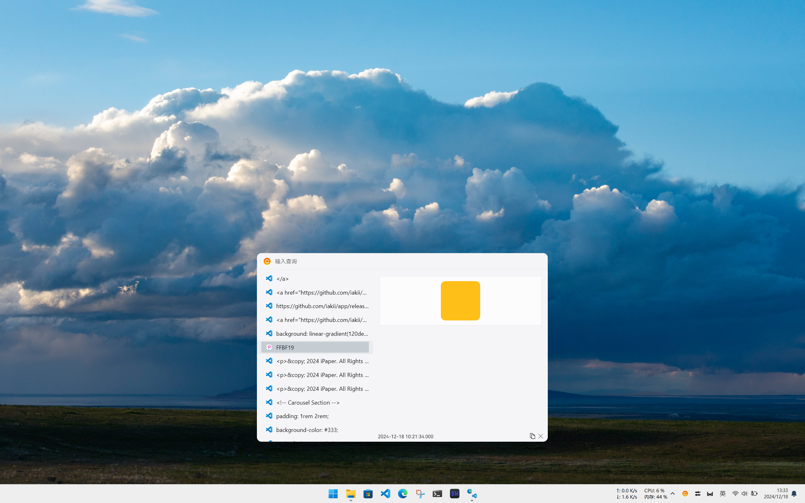
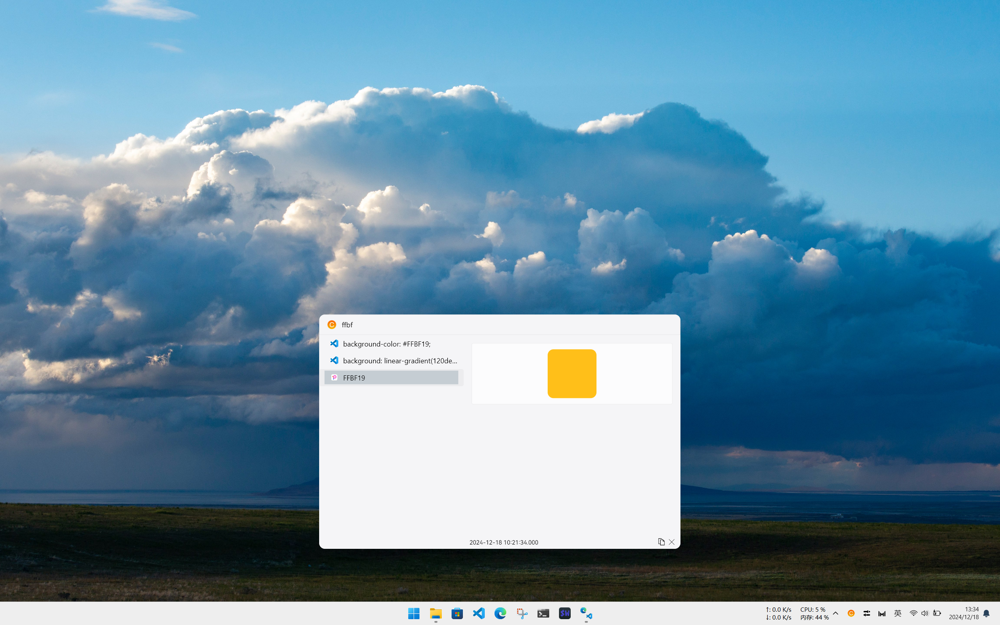

Feature Showcase
功能展示




Key Features
主要功能
- Clipboard History: Keep track of everything you've copied. Never lose important information again.
- 剪贴板历史：跟踪您复制的所有内容，再也不担心丢失重要信息。
- Quick Paste: Select from your clipboard history and paste with just a click.
- 快速粘贴：从剪贴板历史中选择并点击一下粘贴。
- Elegant UI: A clean and modern interface that is easy to use.
- 精美UI设计：简洁现代的界面，操作简单。
- Cross-Platform Support: Works seamlessly on Windows, macOS, and Linux.
- 跨平台支持：在 Windows、macOS 和 Linux 上无缝运行。
- Alt + C: Open/Close main interface with this shortcut.
- Alt + C：使用此快捷键唤起/关闭主界面。
- Escape: Clears input content. If there's no content, it hides the main interface.
- Escape：清除输入内容。如果没有内容，隐藏主界面。
- Auto Pagination: Use Tab/Arrow Down to select the next item, Shift+Tab/Arrow Up to select the previous item, and Enter to paste at the selected position.
- 自动分页：使用 Tab/Arrow Down 选择下一项，Shift+Tab/Arrow Up 选择上一项，Enter 在选定位置粘贴。
- Toggle Sidebar: Switch sidebar effect on or off.
- 切换侧边栏：切换侧边栏效果。
- Customizable File Information: Choose whether or not to display the copied file information.
- 文件信息：选择是否展示复制的文件信息。
- 颜色：如果是颜色值，将会展示颜色效果。
- History Retention: Set history file retention to a maximum of 7 days.
- 历史记录保留：可以设置历史文件最多保留7天。
Why Choose iClip?
为什么选择 iClip？
With iClip, you can:
使用 iClip，您可以：
- Never lose your copied text – Clipboard history is always available.
- 再也不丢失您复制的文本 – 剪贴板历史始终可用。
- Improve your productivity – Quickly access and paste previous items without having to copy them again.
- 提高工作效率 – 快速访问并粘贴之前的内容，无需重新复制。
- Enjoy a beautiful design – A user-friendly and attractive interface that works as well as it looks.
- 享受精美设计 – 用户友好且美观的界面，功能与外观兼备。
Download iClip
下载 iClip
Start organizing your clipboard history today! Available for Windows, macOS, and Linux.
今天就开始整理您的剪贴板历史吧！支持 Windows、macOS 和 Linux。
 Download for Windows
Download for Windows
 Download for macOS
Download for macOS